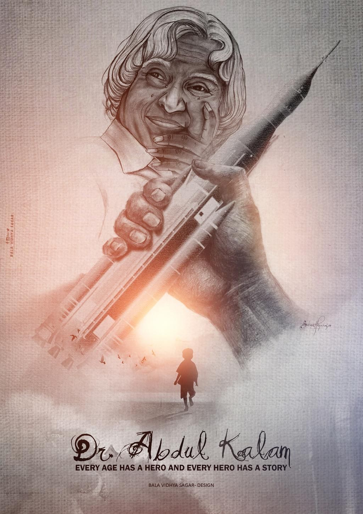

The Missile Man & The Architect of India's Strategic Might

Dr. Avul Pakir Jainulabdeen Abdul Kalam was an exceptional aerospace scientist and India's 11th President. Guided by a fierce belief that strength respects strength, he dedicated his life to transforming India into a self-reliant technological superpower. He adamantly believed that for India to stand tall and equal among world powers, it had to demonstrate unquestionable scientific and defensive capabilities.
Through his leadership at ISRO and DRDO, he broke international technology barriers and gave the citizens of India a profound sense of national pride and sovereignty on the global stage.
Dr. Kalam's crowning contribution to India's global stature was his pivotal role as the Chief Project Coordinator for the historic nuclear tests, which transformed the country's strategic standing forever.
Serving alongside Dr. R. Chidambaram, Dr. Kalam led the scientific teams that successfully weaponised India's nuclear capability in May 1998. Braving intense international espionage and satellites, his strategic genius ensured the absolute secrecy of the operation.
The successful detonation of these atomic devices boldly announced India as a de facto nuclear weapon state. This monumental milestone permanently altered geopolitics, ensuring that global superpowers could no longer ignore India's sovereignty or its security interests.